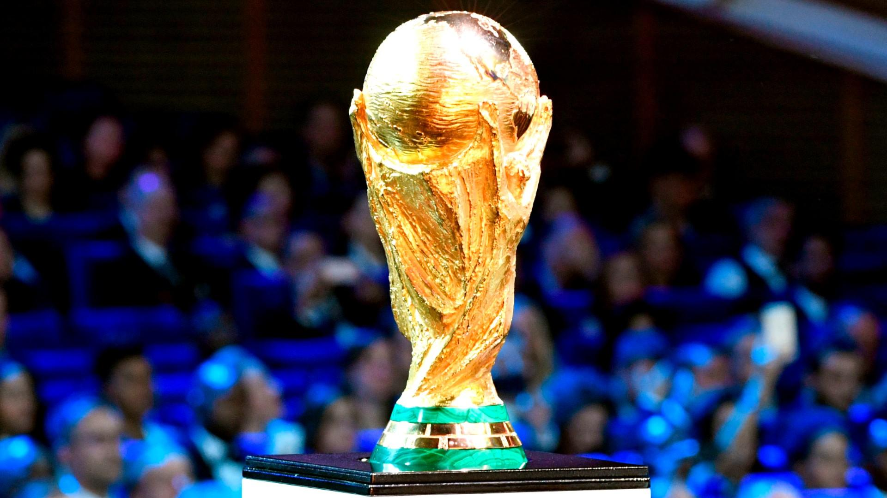

It's Almost Time!
01/11/2022
With only 20 days to go, excitement is building in the Middle East and beyond for the first-ever winter World Cup. It's fair to say preparations are well underway for the biggest sports competition. Eight spectacular stadiums have been officially inaugurated. In preparation for the final, Lusail Stadium will host its first-ever football game.